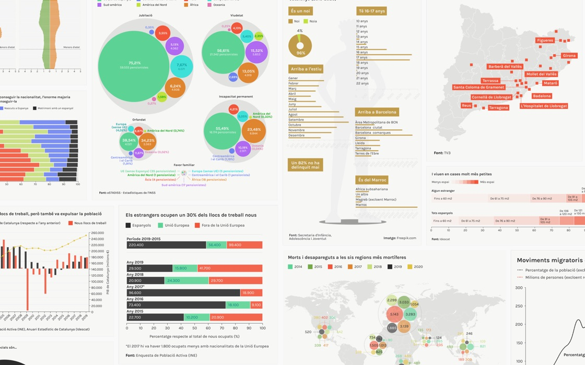
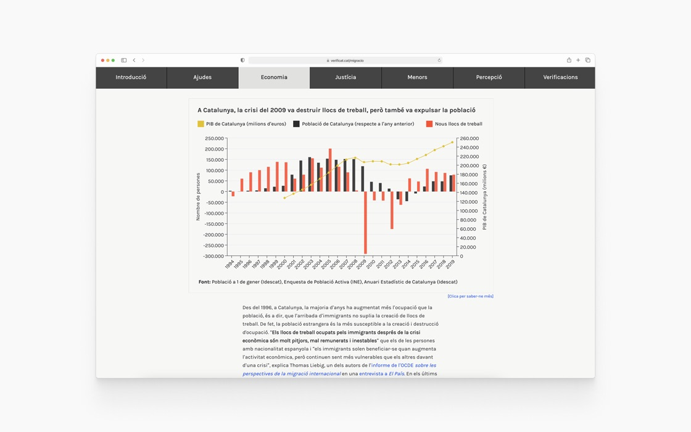
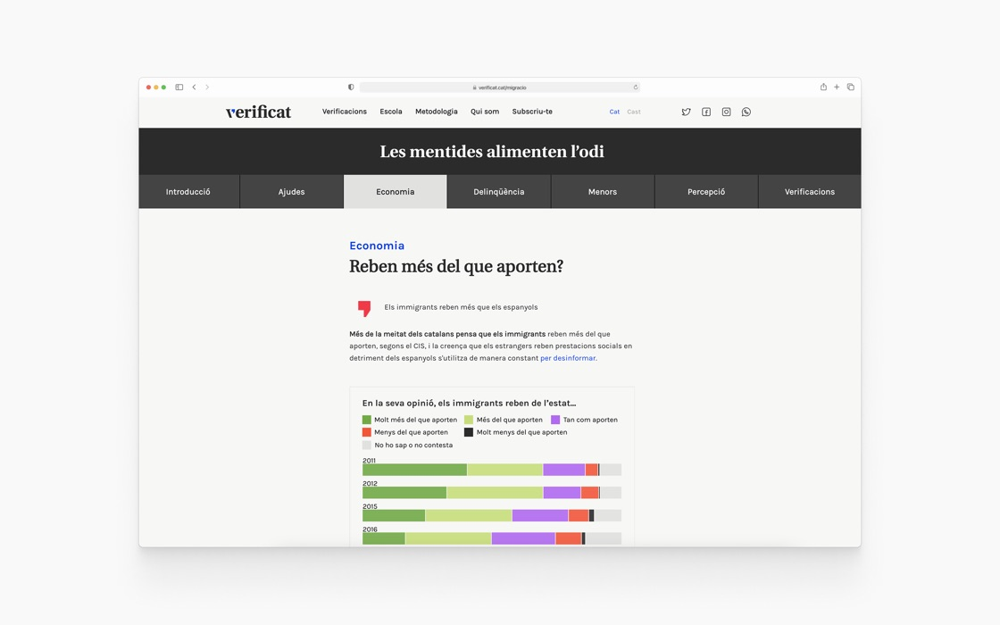
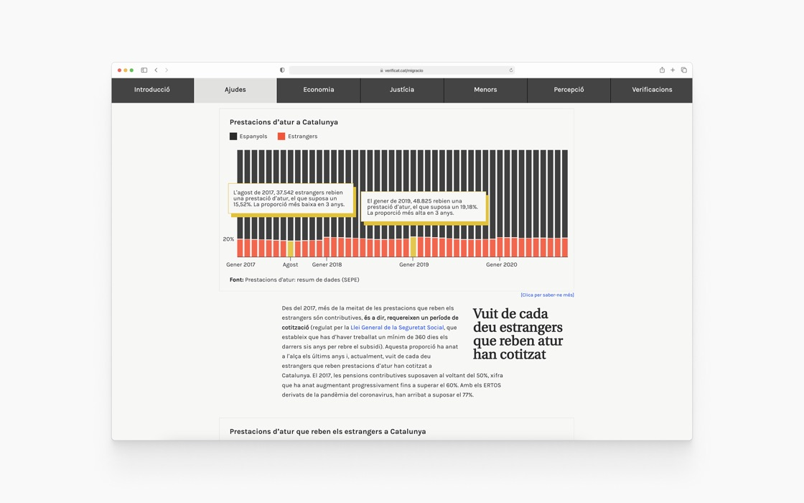
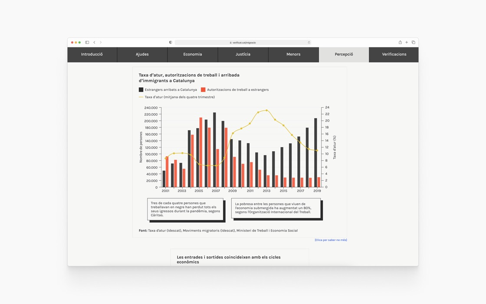
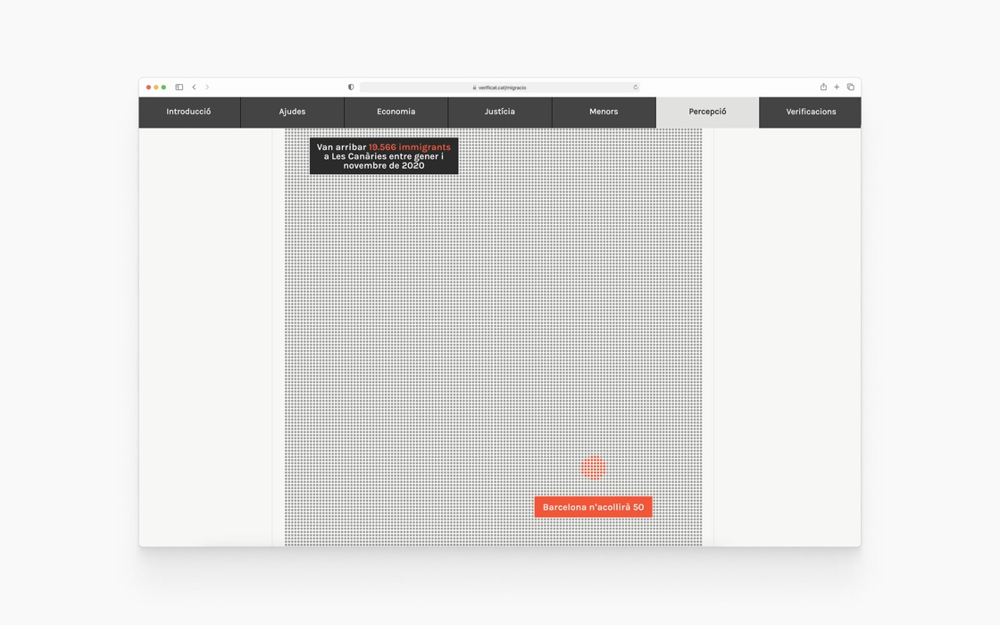
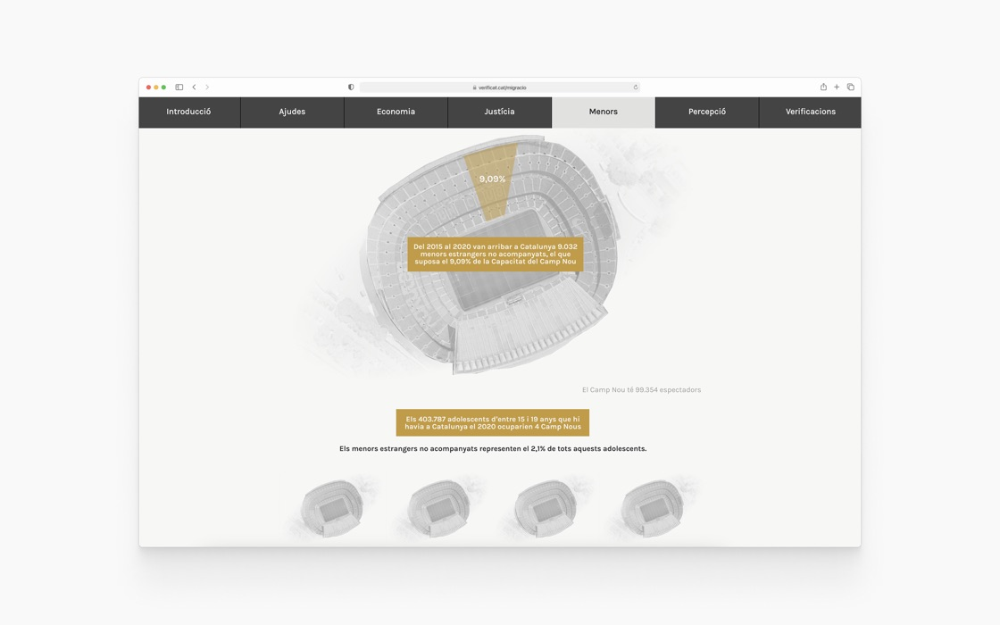

Information design for a special report on migration
Created the visual identity and redesigned 100+ charts and infographics for Verificat's "Lies Feed Hate", a special report with data and fact-checks to debunk myths about migration
Link to the current version of the projectThe current version of the project has been changed over the years and it no longer looks like the screenshots below
- Date
- 2021
- For
- Verificat
- Role
- Visual identity, web design, UI, information design, infographics
- Tools
- Figma, Flourish, HTML, CSS

Context
Verificat is the first fact-checking platform in Catalonia, and one of the four recognized by the International Fact-Checking Network (IFCN) in Spain. As part of its fact-checking activities, Verificat created "Les mentides alimenten l'odi" ("Lies Feed Hate"), a special report that could act as a "repository" with data and verified information to debunk myths about migration processes. The initial proposal was divided into seven blocks: Introduction, Benefits, Economy, Crime, Minors, Perception, and Fact-Checks. The project was led by Alba Tobella, the director and co-founder of Verificat, and Martí Odriozola, the politics journalist of the newsroom.
Role
This being one of Verificat's first flagship projects, I was tasked with developing a coherent visual identity for both the website and data visualizations. To do so, I downloaded and redesigned over 100 Flourish charts created by Martí Odriozola and edited them in Figma. Visual consistency and branding were a priority of this project. While being static, having all data visualizations with a coherent style in vector format in Figma allowed for ease of sharing in social media posts maintaining the project's identity. I also created several infographics mixing data visualizations, iconography or custom-made visual formats, such as dot matrices.

Composition with some of the project's visualizations and infographics
The use of a consistent color palette across graphs allows the reader to easily identify information across multiple visualizations

The website's structure allowed for different chart widths to be used
In the image, a wider graph is used to show more information

The economy section header
Based on Verificat's pre-existing branding developed by another designer, fact-checks used blockquotes as an identifier of the verification's verdict. In this case, red means "false".



